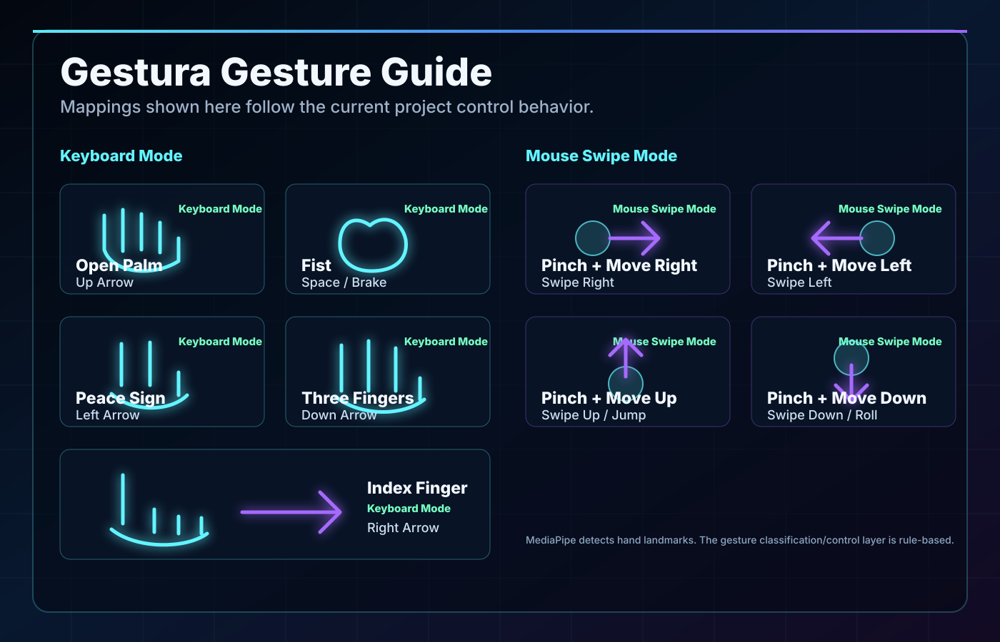

Touchless interaction
Hand movement becomes the interface.
Gayar Vision presents
Control games with your hand. No keyboard. No controller. Just a webcam.
The problem
Traditional game control depends on keyboards, mice, or controllers. Gestura explores a more natural and touchless way to interact with games using computer vision and hand gestures.
Hand movement becomes the interface.
Actions are triggered while the camera stream is running.
A practical showcase of natural input design.
The idea
Gestura reads the webcam feed, detects the user's hand, recognizes predefined gestures, and converts them into keyboard or mouse actions that games can understand.
System flow
Webcam captures live video frames.
OpenCV processes the camera stream.
MediaPipe detects hand landmarks.
Rule-based logic identifies gestures.
Pynput converts gestures into keyboard or mouse actions.
The game receives the simulated input.
Control design
Uses hand gestures to simulate keyboard keys for games such as racing or movement-based games.
View Gesture GuideUses pinch and movement direction to simulate swipe actions for games such as runner-style games.
Open Mapping
Visual summary
A clean overview of the project idea, pipeline, technologies, and demo flow.
View Full Poster
Built with
Project value
Demonstrates real-time computer vision.
Applies human-computer interaction concepts.
Converts hand movement into practical game control.
Can be extended for accessibility and touchless control systems.
Presentation team
Project Introduction & Main Idea
Presented by Gayar Vision
Gestura shows how computer vision can turn simple hand movement into real interactive control.
{kind=link}